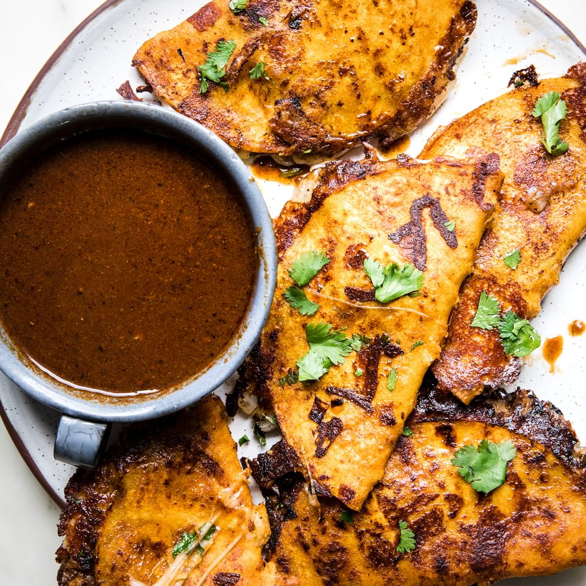

Birria Tacos

Description
What are Birria Tacos?
Birria is traditionally a spicy and super savory Mexican beef or goat stew that’s slow cooked until the meat is tender and fall-apart juicy and delicious. Someone had the amazing idea to stuff this meaty goodness into a taco shell, and then dip the whole thing into the stew and fry it up. These birria tacos blew up after that, and the rest is history.
Birria Ingredients
- Beef. For the ultimate birria tacos, use a good beef shank. This is non-negotiable. You can, and should, mix up another cut as well for texture and variety. I prefer meat that’s a little on the lean side for tacos, so I mixed it up with a cheap roast like sirloin, but if Steph had her way, she would use short ribs. But, since she is not cooking, we ended up with a sirloin.
- Dried Guajillo Peppers. These sun dried peppers add an authentic touch of mexican flavor to any stew and you can usually find them in the Mexican aisle of your local grocery store (if you live in America). They are like a mild-medium pepper and don’t add any heat, so you don’t have to worry at all. If you can’t find them, sub any dried mexican/southwestern peppers you can find, such as ancho, new mexico, california, or pasilla. If you really can’t find them, you can skip them, but they’re worth looking for!
- Chipotle peppers in adobo. These come in a little can and they are salty-sweet-spicy delicious. They form the base of many mexican stews and marinades and you can find them pretty much everywhere in the world, they’re that good. We usually keep 3-4 cans around just for tacos al pastor.
- Mexican oregano. This version of oregano is always cheaper and almost always fresher and better than the spice aisle stuff, so if you’re already in the Mexican aisle, be sure to pick up a bag, usually only 99 cents or so.
How to make Birria Stew
- Soak the peppers. Bring a pot of water to a boil and then take it off the heat, soak the dried peppers while you do the next steps.
- Season the meat. While you wait for the peppers to soak, cube up the roast and season the meat with salt and pepper
- Make the marinade. Throw together everything left except the cloves, bay leaves, and cinnamon into a blender. Remove the peppers from the now warm water and let them get cool enough to handle. Hold them by the tip over the sink and cut the tops off with scissors. The seeds will just fall right out. Then drop them into the blender too. Blend it all up into a smooth paste.
- Marinate the beef overnight. Two hours is good enough too, but longer is always better when it comes to stews.
- Make the stew. Saute the onions. Onions are the base of all flavor, so make sure they are extra delicious – transparent and golden. Take your time. Then add the meats, cover with chicken stock, and add the last few spices. That’s all there is to it!
How to make Birria Tacos
- Shred your meats. Fry them up too, if you like. I skipped this step and it was ok, but if you like your meat extra crispy and hot, here’s where you would do that.
- Warm up your tortillas. This makes them pliable and soft. We use a tortilla warmer, but you can just wrap them up in damp paper towels and microwave for 30 seconds.
- Dip and fill. Dip your tortillas in the soup, the fat is near the surface so you don’t need to dip too far, but make sure they get coverage. Then top half of the tortilla with beef, onions, cilantro (optional), and cheese (optional).
- Fold and fry. Fry your tacos in a non stick skillet over medium heat until they crisp up, 2-3 minutes per side. Serve with a side of the stew to use as a dip.